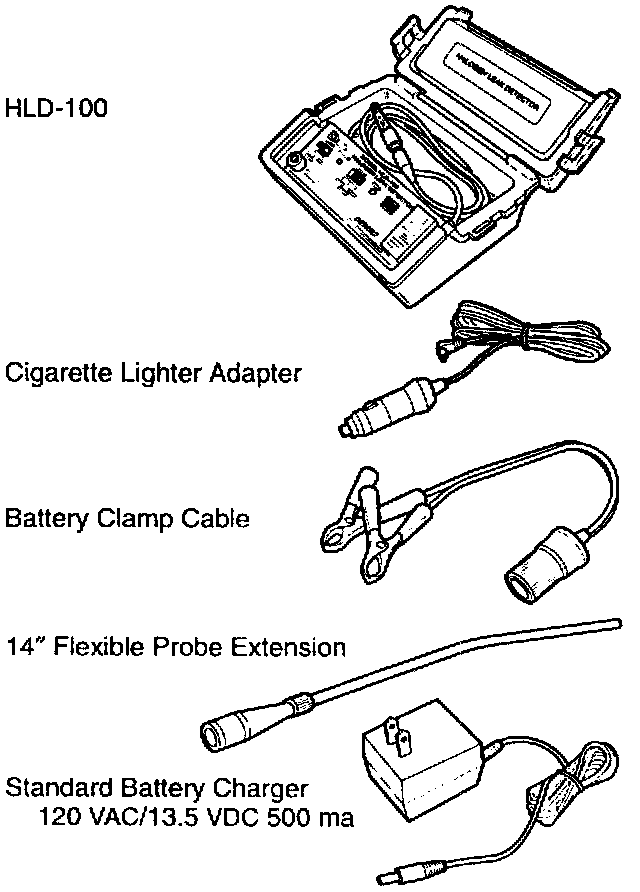
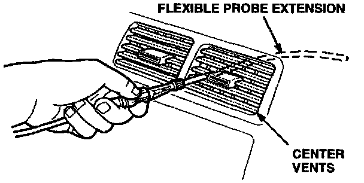

New Halogen Leak Detector
May 13, 1997BULLETIN NO.
97-013
YEAR
ALL
MODEL
ALL
VIN APPLICATION
ALL
Denso HLD-100 Halogen Leak Detector
A new tool is required to accurately detect A/C refrigerant leaks in all Acura vehicles. The Denso HLD-100 Halogen Leak Detector has the following features:
^ Works with both R-12 and R-134a systems.
^ Impact resistant polyethylene case.
^ Auto balance adjustment; eliminates false alarms by adjusting for background gasses in the air.
^ A calibration reference vial provides a leak signal to check the unit's accuracy.
^ Has a flexible probe extension; finds leaks in hard-to-reach places.
^ Small and portable; the battery, cables, and flexible probe extension probe can be transported together as a unit.
NOTE:
Yokogawa H-10P, H-10N, and Kent Moore # J39400 are equivalent to the HLD-100.
SPECIFICATIONS
Sensing Element Positive Ion
Emission Heated Diode
Sensitivity (moving probe test per
SAE Std. J1627)
Alarm Sensitivity:
Switch Position R-134a R-12
Leak Check 3.0 oz./yr 1.0 oz./yr
Search 2 0.5 oz./yr 0.1 oz./yr
Search 1 0.1 oz./yr 0.05 oz./yr
Leak Alarm Audible with visible
neon lamp
Response Time Approximately 1 second
(slightly longer with flexible probe extension)
Warm-Up Time Approximately 2 minutes
Accuracy Exceeds SAE J1627
Hose Length 4.5 feet
Probe Extension Length 14 inches
Ambient Operating Temp 32° to 104°F
Dimensions 5.5" x 10.5" x 8.5"
Weight 5 pounds
Agency Listings UL file SA9717,
SAEJ1627, CE-Mark
Power 12 VDC-Internal rechargeable, sealed lead acid battery
12 VDC-External Battery using battery clamp/cigarette lighter plug
EXTENDED WARRANTY INFORMATION
With the following exceptions, the HLD-100 comes with the manufacturer's limited 1 year warranty. Refer to the Operator's Manual for additional details.
^ Probe assembly, on/off switch, sensor socket, and carrying case - 3 years
^ Printed Circuit Board - 5 years
For parts or service, call Denso Technical Assistance at 800-366-1123.

DENSO HALOGEN LEAK DETECTOR KIT:
ORDERING INFORMATION
Can be ordered through the American Honda Tool and Equipment Program at 800-346-6327. Ask for the HLD-100.
USAGE TIPS
Here are some useful hints when using the HLD-100. Refer to the Operator's Manual for complete operating instructions.
^ When using the leak detector for the first time, allow the leak detector to warm up for 2 minutes with the probe in a clean atmosphere; this lets the sensor temperature stabilize.
^ Calibration check should be done in the "Search 2" mode. Once done, the other check modes don't need calibrating.
^ If checking an evaporator through the drain hose, avoid drawing water into the probe. This could shorten the life and function of the internal pump and sensor.
^ Avoid creasing the flexible probe extension when you bend it. This could restrict air flow and give false readings.
^ Because the detector recalibrates itself for ambient gases, you may have to move away from the leak momentarily to clear the sniffer, then reapproach the leak.
^ When removing the clear probe tip, be careful not to lose the flow ball.
Finding Leaks in the Evaporator Area
1. Start the engine, and turn on the A/C.
2. Set the Fresh/Recirc button to Fresh, then turn the blower motor to High for 15 seconds.
3. Turn oft the blower, and set the Fresh/Recirc button to the Recirculation position. Wait 10 minutes to allow any leaking refrigerant to accumulate in the vents.

4. Attach the flexible probe extension, and insert it in the center grille.
5. Turn the blower motor to Low for about half a second; this will force any accumulated refrigerant out through the vent.
GENERAL TIPS WHEN CHECKING FOR LEAKS
^ Both R-12 and R-134a are heavier than air, so always check 360 degrees around all fittings.
^ If the system is very low on refrigerant, charge it to its normal capacity. (Some leaks are impossible to find unless the system is operating at normal pressures.)
^ Refrigerant leaks are also oil leaks. The easiest way to spot a leak is to look for joints or components coated with oily dust. Check for damage and corrosion at the same time.
^ When checking the service ports for leaks, be sure the cap seals are in place and the caps are tight. The cap is used as the final seal in the system, not just to keep dirt out of the schrader valve.
^ Check the whole system in a continuous path; don't stop the first time the detector indicates a leak. Check all fittings, couplings, service ports, pressure switches, welded areas, and areas around attachment points on lines and components.
^ When checking the crimped metal ends on a rubber hose, wiggle the hose around.
^ Move the probe slowly (one inch per second is the recommended rate), and keep it within 1/4 inch of the components. Moving the probe even slower at closer proximities increase the likelihood of finding the leak.
^ Check the low-pressure side when the system is not running. Check the high-pressure side when the system is running and also right after turning it off. (The air from the cooling fans may give you false alarms.) Since the compressor and the evaporator are in both sides of the system, check these components when the system is running and when it's off.
^ Verify apparent leaks by blowing the area with compressed air, then recheck for leaks. In case of a very large leak, blowing out the area may help pinpoint the exact source of the leak.
SERVICING THE HLD-100
Here are some servicing tips for the HLD-100. Refer to the Operator's Manual for detailed service procedures.
^ Check and replace the probe filter if it is clogged. Be careful not to lose the flow ball when doing this.
^ The reference calibration vial can be expected to last approximately 6 months. Replace it when it is empty.
^ If the sensitivity adjustment dial does not calibrate the sensor, replace the sensor.